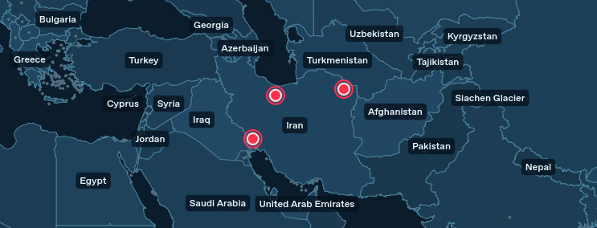

FAST VIEWSHED · راهنمای کاربران ویندوز
راهنمای استفاده از نرمافزار Fast Viewshed
نسخهٔ ۳٫۶٫۲ · ویندوز ۱۰ و ۱۱، ۶۴ بیتیاین برنامه با استفاده از نقاط ورودی و مدل ارتفاعی زمین، محدودههای قابلدید را در شعاع و جهت انتخابی محاسبه میکند. نصب، فعالسازی و محاسبه در نسخهٔ توزیعی بهصورت آفلاین انجام میشوند.

شروع کار
FastViewshed_With_Logo_Setup.exe را اجرا و مراحل نصب را تا پایان دنبال کنید. سپس از میانبر دسکتاپ یا منوی Start برنامه را باز کنید.FastViewshed.exe داخل آن را اجرا کنید. کپیکردن فقط فایل اجرایی کافی نیست.بستهٔ کامل کتابخانههای لازم را همراه دارد؛ کاربر به نصب جداگانهٔ پایتون، Conda یا ArcGIS نیاز ندارد. آمادهسازی اولین اجرا ممکن است چند دقیقه طول بکشد؛ فضای خالی کافی داشته باشید و برنامه را چند بار همزمان باز نکنید.
.fvrequest را برای شخصی که نرمافزار را به شما داده است بفرستید..fvlicense را دریافت کنید؛ در همان پنجره «انتخاب فایل لایسنس و فعالسازی…» را بزنید و آن را انتخاب کنید.در لایسنسهای مدتدار جدید، شمارش روزها از اولین فعالسازی موفق روی دستگاه شما آغاز میشود؛ هر روز برابر ۲۴ ساعت است. بستن برنامه، زمان را متوقف نمیکند و واردکردن دوبارهٔ همان فایل، مدت را از نو شروع نمیکند. پس از پایان اعتبار باید از ارائهدهنده لایسنس جدید بگیرید.
لایسنس مخصوص یک دستگاه است؛ روی دستگاه دیگر قابل استفاده نیست. پس از نصب مجدد ویندوز یا تغییر مهم سختافزار، ممکن است به درخواست و لایسنس جدید نیاز داشته باشید. اگر روی همین حساب ویندوز قبلاً فعال کردهاید، ورود مستقیم بدون نمایش پنجرهٔ فعالسازی طبیعی است.
تاریخ و ساعت ویندوز را صحیح نگه دارید. برای رفع خطای لایسنس، سابقهٔ فعالسازی، پروفایل یا رجیستری را پاک نکنید؛ متن خطا را برای ارائهدهنده بفرستید.
دادههای ورودی
یک لایهٔ نقطهای با قالب Shapefile یا GeoJSON لازم است. برای شیپفایل، فایلهای همنام .shp، .shx، .dbf و .prj را کنار هم نگه دارید؛ فایلهای همراه دیگر مانند .cpg را نیز حذف نکنید.
جدول زیر فقط نمونهٔ ساختار اتریبیوت است. نام ستونهای فایل شما میتواند متفاوت باشد؛ کافی است آنها را درست به گزینههای برنامه معرفی کنید.
| name | az_start | az_end | tx_h | rx_h |
|---|---|---|---|---|
| ایستگاه الف | ۳۵۰ | ۲۰ | ۱۰۰ | ۲ |
| ایستگاه ب | ۰ | ۰ | ۵۰ | ۲ |
در این مثال، az_start / az_end زاویهها و tx_h / rx_h ارتفاعها هستند. ستونهای ارتفاع تنها وقتی استفاده میشوند که گزینهٔ «از ستون» را فعال کرده باشید.
در «DEM ارتفاعی» یک رستر ارتفاعی تکباند، ترجیحاً GeoTIFF، انتخاب کنید. فایل باید موقعیت جغرافیایی و سیستم مختصات معتبر داشته باشد و محدودهٔ نقاط و شعاع تحلیل را پوشش دهد. برنامه مدل ارتفاعی را از اینترنت دریافت نمیکند.
«واحد ارتفاع پیکسلهای DEM» را مطابق مقدارهای ارتفاعی فایل، متر یا فوت قرار دهید. این گزینه واحد ارتفاع زمین است؛ از روی درجه یا متر بودن مختصات نقشه نمیتوان آن را تشخیص داد.
پارامترهای تحلیل
در «شعاع قطاع» عدد و واحد کنار آن را با هم بررسی کنید. ۵ با واحد km یعنی ۵ کیلومتر و ۵ با واحد m یعنی ۵ متر. شعاع باید مثبت باشد؛ سقف قابل انتخاب برابر ۵۰۰۰ کیلومتر است. افزایش شعاع، زمان و حافظهٔ بیشتری میخواهد و همچنان به پوشش کافی DEM نیاز دارد.
آزیموت، زاویه از شمال جغرافیایی در جهت عقربههای ساعت است: شمال ۰، شرق ۹۰، جنوب ۱۸۰ و غرب ۲۷۰ درجه. مقدارها از ستونهای انتخابی هر نقطه خوانده میشوند.
| شروع | پایان | معنی |
|---|---|---|
| ۰ | ۹۰ | قطاع بین شمال و شرق |
| ۳۵۰ | ۲۰ | قطاعی که از شمال عبور میکند |
| ۰ | ۰ | دایرهٔ کامل؛ شروع و پایان برابرند |
پایان، جهت انتهای قطاع است، نه مقدار بازشدگی آن. برای نمونه، شروع ۹۰ و پایان ۱۲۰ یعنی قطاع ۳۰ درجهای. مقدار زاویه باید معتبر و غیرخالی باشد؛ رکوردهای نامعتبر در گزارش ردشدگان ثبت میشوند.
برای ارتفاع یکسان همهٔ نقاط، عدد ثابت وارد کنید. برای ارتفاعهای متفاوت، «فرستنده از ستون» یا «گیرنده از ستون» را فعال و ستون مربوط را انتخاب کنید. واحد کنار همان ارتفاع بر عددهای ستون نیز اعمال میشود. مقدار Z هندسهٔ نقطه جای این تنظیمات را نمیگیرد.
«فقط FID؛ منفی یک = همه»: برای تمام نقاط، مقدار را روی «همهٔ نقاط» یا ۱− نگه دارید. مقدار دیگر فقط همان شناسهٔ داخلی لایه را انتخاب میکند؛ این شناسه لزوماً شمارهٔ ردیف یا ستون Id نیست.
اجرا و تحویل نتیجه
«پوشهٔ ذخیره» را در محلی قابل نوشتن انتخاب کنید؛ مسیر پیشفرض داخل Documents / FastViewshedResults است. هر اجرا زیرپوشهٔ جدیدی میسازد. سپس «محاسبه و تولید Shapefile» را بزنید و وضعیت را در «گزارش اجرا» دنبال کنید.
visible.shp است. برای نام دلخواه از دادهها، «ستون نام فایل خروجی مشترک» و سپس «مقدار دلخواه برای نام فایل» را انتخاب کنید. این انتخاب فقط نام فایل است و نقاط را فیلتر نمیکند.details قرار میگیرند.| فایل | کاربرد |
|---|---|
visible.shpیا نام انتخابی شما | خروجی اصلی: فقط محدودههای قابلدید؛ در حالت مستقل، فایلهای هر نقطه را باز کنید. |
visibility.shp | همهٔ کلاسها در ستون status: ۱ قابلدید، ۰ پنهان و ۲ نامعلوم. |
sectors.shp | فقط مرز قطاع تحلیل؛ مرز قطاع به معنی پوشش قابلدید نیست. |
coverage.shp | ادغام پوششها؛ فقط با فعالکردن گزینهٔ مربوط ساخته میشود و زمان بیشتری میبرد. در حالت مستقل غیرفعال است. |
run.jsonREADME_RESULTS_FA.txt | تنظیمات و خلاصهٔ اجرا، نام خروجیهای اصلی و توضیح فایلها. |
skipped_records.csvskipped_records.json | رکوردهای ردشده، نام و شناسهٔ آنها و علت ردشدن؛ در صورت وجود، بررسی کنید. |
FAILED.txt | نشانهٔ اجرای ناموفق، لغوشده یا ناقص؛ پوشه را نتیجهٔ کامل تلقی نکنید. |
پس از پایان، «باز کردن پوشهٔ نتیجه» را بزنید. فایل اصلی را در QGIS یا ArcGIS Pro باز کنید. اگر فایل همهٔ کلاسها را باز کردهاید، نمایش را با ستون status دستهبندی کنید یا فقط مقدار ۱ را فیلتر کنید.
.shp کافی نیست. اگر خروجی خالی است یا بعضی نقاط غایباند، گزارش ردشدگان را بخوانید.خواندن نمایش برنامه
پس از خواندن فایل نقاط، نشانگرهای قرمز با حاشیهٔ روشن روی نقشه قرار میگیرند. آنها محل نقاط ورودی هستند؛ تا پیش از انجام محاسبه، از روی نشانگر یا حلقهٔ اطراف آن نمیتوان دربارهٔ دیدپذیری نتیجه گرفت.
| نمایش | معنی |
|---|---|
| نشانگر قرمز روی نقشه | موقعیت نقطهٔ ورودی |
| حالت «فقط محدودهٔ قابلدید — قرمز» | سطحهای قرمز، محدودههای قابلدیدِ نتیجهٔ انتخابی هستند. |
| حالت «همهٔ کلاسها» | سبز: قابلدید؛ قرمز: پنهان؛ خاکستری: نامعلوم |
«انتخاب نقشهٔ خودم…» را بزنید و فایل معتبر را انتخاب کنید. قالبهای پشتیبانیشده شامل Shapefile، GeoJSON، GeoPackage، KML و GeoTIFF هستند. فایلهای همراه شیپفایل نیز باید کنار آن باشند. اگر کد سیستم مختصات خواسته شد، فقط کد واقعی فایل را وارد کنید.
با «بازگشت به نقشهٔ پیشفرض» میتوانید نقشهٔ اولیه را برگردانید. تغییر پسزمینه، فایل DEM، نقاط ورودی یا نتیجهٔ تحلیل را تغییر نمیدهد.
بعد از محاسبه، در «پیشنمایش دیدپذیری» نتیجهٔ نقطهٔ موردنظر را از فهرست انتخاب و حالت رنگ را بررسی کنید. برای ریز مراحل و خطاها به «گزارش اجرا» بروید؛ «ذخیرهٔ گزارش» متن گزارش را نگه میدارد. «لغو» اجرای جاری را متوقف میکند؛ خروجی ناقص را تحویل ندهید.
وقتی به تنظیم بیشتر نیاز دارید
برای شروع، تنظیمات پیشفرض را نگه دارید. گزینههای زیر در «تنظیمات پیشرفته: سرعت، تفکیک و انحنای زمین» قرار دارند. ابتدا یک نقطه و شعاع کوچک را آزمایش کنید و سپس کار اصلی را اجرا کنید.
| گزینه | روش استفاده |
|---|---|
| اندازهٔ پیکسل، متر؛ صفر = خودکار | صفر یعنی اندازهٔ پیکسل از DEM برآورد شود. عدد بزرگتر شبکه را درشتتر و معمولاً پردازش را سریعتر میکند؛ جزئیات کمتری میماند. |
| حالت تفکیک | «تفکیک اصلی DEM» برای جزئیات بیشتر است. گزینههای ۲ و ۴ برابر، پیکسل را درشتتر میکنند؛ ۴ برابر به معنی دقت بیشتر نیست. |
| پیکسل خودکار برای شبکهٔ بزرگ | در حالت پیشفرض روشن است؛ اگر شبکه خیلی بزرگ شود، اندازهٔ پیکسل را برای محدودکردن تعداد سلولها افزایش میدهد. تفکیک واقعی را در گزارش بررسی کنید. |
| سقف شبکهٔ هر نقطه | پیشفرض ۲۵ میلیون سلول است. این عدد سقف مصرف RAM نیست. افزایش آن میتواند زمان و حافظهٔ زیادی بخواهد؛ بیدلیل آن را تا بیشینه نبرید. |
| انحنای زمین و شکست جوی | پیشفرض روشن و ضریب شعاع مؤثر k برابر ۱٫۳۳۳۳۳ است. این مقدار را با ضریب شکست ۰٫۱۳ اشتباه نگیرید. فقط با شناخت مدل پروژه تغییر دهید. |
| EPSG خروجی | صفر یعنی سیستم مختصات لایهٔ نقاط ورودی. در صورت نیاز، کد معتبرِ سیستم مختصات خروجی را انتخاب کنید؛ واردکردن کد حدسی داده را اصلاح نمیکند. |
| ارتفاعهای ناموجود | پیشفرض «نامعلوم» است. گزینهٔ Treat Missing Elevations as Ocean همهٔ خلأهای ارتفاعی را صفر فرض میکند، حتی اگر در واقع دریا نباشند؛ تنها با آگاهی از داده تغییر دهید. |
شعاع و تعداد نقاط را برای آزمایش کم کنید؛ در صورت پذیرفتن کاهش جزئیات، پیکسل درشتتر انتخاب کنید. ادغام coverage.shp را فقط در صورت نیاز روشن کنید. شعاع ۵۰۰۰ کیلومتر سقف مجاز ورودی است و تضمین اجرای سریع یا نتیجهٔ دقیق با هر دادهای نیست.
این تحلیل خط دید بر مبنای سطح ارتفاعی است؛ ساختمان و درخت فقط در صورت وجود در دادهٔ ارتفاعی لحاظ میشوند. خروجی، محاسبهٔ قدرت سیگنال رادیویی یا تضمین پوشش ارتباطی نیست.
راهنمای رفع اشکال
| مشکل | اقدام پیشنهادی |
|---|---|
| برنامه باز نمیشود یا اولین اجرا طول میکشد | ابتدا بسته را کامل استخراج کنید. در حالت Portable همهٔ فایلها را نگه دارید. برای آمادهسازی اولیه فرصت بدهید. اگر خطا باقی ماند، متن آن و نسخهٔ ویندوز را برای ارائهدهنده بفرستید. |
| بدون پرسیدن لایسنس وارد میشود | بالای پنجره را ببینید؛ اگر «لایسنس فعال» است، فعالسازی معتبر قبلی همین حساب شناسایی شده است. |
| لایسنس منقضی، نامعتبر یا مربوط به دستگاه دیگر است | درخواست همین دستگاه را دوباره برای ارائهدهنده بفرستید و فایل مناسب بگیرید. کپیکردن لایسنس دستگاه دیگر یا واردکردن مجدد فایل منقضی، اعتبار تازه ایجاد نمیکند. |
| پیام عقببردن ساعت | تاریخ، ساعت و منطقهٔ زمانی ویندوز را صحیح کنید. نسخهٔ نصبشده باید اصلاحیهٔ ۳٫۶٫۲ را داشته باشد. اگر پیام ادامه داشت با ارائهدهنده تماس بگیرید؛ سابقهٔ فعالسازی را حذف نکنید. |
| ستونها خالیاند یا نقاط در جای غلطاند | «خواندن ستونهای اتریبیوت» را بزنید. فایلهای همراه شیپفایل و سیستم مختصات واقعی ورودی را بررسی کنید. |
| فقط یک نقطه محاسبه میشود | «فقط FID» را روی «همهٔ نقاط» یا ۱− برگردانید؛ دکمهٔ نمونهٔ Global Mapper آن را روی ۱ قرار میدهد. |
| خروجی خالی است یا چند نقطه حذف شدهاند | گزارش اجرا و skipped_records.csv را بخوانید. زاویهها، ارتفاعها، پوشش و خلأهای DEM و واحدها را بررسی کنید. پایان اجرا به معنی معتبر بودن همهٔ رکوردها نیست. |
| کل قطاع رنگ شده یا رنگها اشتباهاند | مطمئن شوید sectors.shp را بهجای نتیجه باز نکردهاید. خروجی اصلی فقط قابلدید است؛ در visibility.shp از ستون status استفاده کنید. |
| نام کشورها دیده نمیشود | نمایش نامها را روشن و بزرگنمایی را بیشتر کنید. اگر نقشهٔ سفارشی دارید، وجود نام عوارض در دادهٔ آن را نیز بررسی کنید. |
۱. جای نقاط و سیستم مختصات درست است. ۲. ستون شروع و پایان انتخاب شده است. ۳. DEM محدوده را پوشش میدهد و واحد ارتفاعش صحیح است. ۴. شعاع و هر دو ارتفاع با واحد درست وارد شدهاند. ۵. انتخاب «همهٔ نقاط» یا FID عمدی است. ۶. پوشهٔ خروجی قابل نوشتن است.
run.json را هم ضمیمه کنید؛ اطلاعات حساس پروژه را پیش از ارسال بررسی کنید.این راهنما همراه نرمافزار قابل ارسال است. برای اجرای کاربر نهایی، بستهٔ نصب یا Portable کامل و لایسنس مخصوص همان دستگاه را تحویل دهید؛ ابزارهای ساخت و صدور لایسنس برای کاربر لازم نیستند.